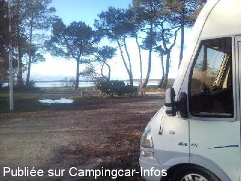
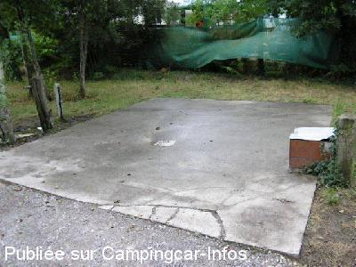
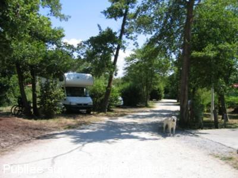

ASN = Aire de services avec stationnement nuit possible de :
SANGUINET
(N° 825)
Accès/adresse :
Avenue de Losa
40460 SANGUINET
40460 SANGUINET
Latitude : (Nord) 44.48389° Décimaux ou 44° 29′ 2′′
Longitude : (Ouest) -1.09087° Décimaux ou -1° 5′ 27′′
Tarif : 2015
Stationnement, services, du 01/05 au 15/09 : 9 €
Type de borne : Artisanale
Services :


Commerces en ville à environ 800 m
Autres informations :
Ouvert toute l'année
15 emplacements
Stationnement limité 48 H
Tel : +33(0)558 821 182
Plage, école de voile en saison
Face au lac de Sanguinet Cazaux Biscarrosse,
Entre le camping des Grands Pins et le Camping du Lac

Le 17/12/2010 par Beunon daniel

Le 18/09/2006 par jjbo

Le 09/08/2005 par audste.fra
de
olivier372
le 18/02/2016 :
De passage le 18/02/16. Nous sommes 5. L"aire est gratuite à cette période, l"eau est ouverte. Même après quelques pluies, l"aire est assez propre.
De passage le 18/02/16. Nous sommes 5. L"aire est gratuite à cette période, l"eau est ouverte. Même après quelques pluies, l"aire est assez propre.
de
jean et rose68
le 04/05/2015 :
sommes passés fin avril , elle est gratuite jusqu'a debut mai , mais le sol n'est pas stabilisé sur un emplacement sur deux ...en cas de pluie cela pose des problèmes ...mais nous reviendrons ..
sommes passés fin avril , elle est gratuite jusqu'a debut mai , mais le sol n'est pas stabilisé sur un emplacement sur deux ...en cas de pluie cela pose des problèmes ...mais nous reviendrons ..
de
sybrub
le 02/05/2015 :
nous y sommes retournés et y avons passé 2 nuits en avril, le 28 et 29. A cette époque de l'année c'est gratuit.
nous y sommes retournés et y avons passé 2 nuits en avril, le 28 et 29. A cette époque de l'année c'est gratuit.
de
HERVE
le 11/05/2014 :
§ Bonjour,
cette aire est a 8 euros du 01/05 au 15/09 ( changement de municipalité ) malgré le peu de service
§ Bonjour,
cette aire est a 8 euros du 01/05 au 15/09 ( changement de municipalité ) malgré le peu de service
de
Annick/Michel
le 28/04/2013 :
De passage le21/04/2013 à déconseiller,tant que la municipalitée n'aura pas pris les iniciatives qui s'imposes.8€ la nuitée?!!!avec le peu de service.Nous trouvons l' aire un peu coupe gorges surtout celle de la vidange,l'autre située 300ms avant..!bof mieux stabilisée lors d'une forte pluie.Sans plus.Mieux vos passer sont chemin.
De passage le21/04/2013 à déconseiller,tant que la municipalitée n'aura pas pris les iniciatives qui s'imposes.8€ la nuitée?!!!avec le peu de service.Nous trouvons l' aire un peu coupe gorges surtout celle de la vidange,l'autre située 300ms avant..!bof mieux stabilisée lors d'une forte pluie.Sans plus.Mieux vos passer sont chemin.
de
BRUBION
le 10/05/2012 :
2 aires en fait à sanguinet. L'une où se trouve la borne de service avec des espaces bien délimités et l'autre, dans la même rue mais bien plus grande et ombragé. Depuis notre passage en 2010, le bloc où se trouvait les toilettes ne semblent plus à disposition. En tout cas, c'était fermé lors de notre passage du 27.04.2012
2 aires en fait à sanguinet. L'une où se trouve la borne de service avec des espaces bien délimités et l'autre, dans la même rue mais bien plus grande et ombragé. Depuis notre passage en 2010, le bloc où se trouvait les toilettes ne semblent plus à disposition. En tout cas, c'était fermé lors de notre passage du 27.04.2012
de
Frédo40
le 02/04/2012 :
Sanguinaitois et camping-cariste, je vous signale que l'aire a été remise en eau ce weekend.
Elle est payante (7€) mais uniquement du 15 juin au 15 septembre.Pour plus d'info pour les CC voir le lien de l'ot ci-dessous.
http://www.sanguinet.com/FR/hebergements/aires_campings_car.aspx
Frédo40
Sanguinaitois et camping-cariste, je vous signale que l'aire a été remise en eau ce weekend.
Elle est payante (7€) mais uniquement du 15 juin au 15 septembre.Pour plus d'info pour les CC voir le lien de l'ot ci-dessous.
http://www.sanguinet.com/FR/hebergements/aires_campings_car.aspx
Frédo40
de
josselin
le 03/11/2011 :
de passage le 03112011 le terrain a ete remblayé et la terre avec le gravat est moins salissante, aire tres agréable au bord du lac, en novembre tout est gratuit
de passage le 03112011 le terrain a ete remblayé et la terre avec le gravat est moins salissante, aire tres agréable au bord du lac, en novembre tout est gratuit
de
Brubion
le 18/08/2010 :
Avantage proche du lac, des toilettes sur place. Terrain pas terrible avec des chiens, coté propreté du CC, mais c'est ombragé.
Avantage proche du lac, des toilettes sur place. Terrain pas terrible avec des chiens, coté propreté du CC, mais c'est ombragé.
de
joel izon
le 09/05/2010 :
Tarif 7€ pour un terrain vague et boueux. Merci Sanguinet. §
Tarif 7€ pour un terrain vague et boueux. Merci Sanguinet. §
de
philmado
le 10/02/2009 :
Cette aire de services doit être refaite cette année 2009 (je l'espère car camping-cariste et sanguinetois). Cela fait 2 ans que j'en parle (avec l'ex municipalité). A suivre...
Cette aire de services doit être refaite cette année 2009 (je l'espère car camping-cariste et sanguinetois). Cela fait 2 ans que j'en parle (avec l'ex municipalité). A suivre...
de
Lavenan Thierry
le 27/11/2007 :
Emplacement plutôt sympatique. L'approche de la vidange est assez délicate, j'ai opté pour la méthode à l'huile de coude: allers et retours par seaux... mais quand on est camping-cariste le temps n'a pas beaucoup d'emprise. Une réfection de la borne de service donnerait à cette aire l'attrait qu'elle mérite. Pour les accros de la télé avec parabole: attention aux arbres, l'emplacement sur lequel je me trouvais doit être le seul valable.
Emplacement plutôt sympatique. L'approche de la vidange est assez délicate, j'ai opté pour la méthode à l'huile de coude: allers et retours par seaux... mais quand on est camping-cariste le temps n'a pas beaucoup d'emprise. Une réfection de la borne de service donnerait à cette aire l'attrait qu'elle mérite. Pour les accros de la télé avec parabole: attention aux arbres, l'emplacement sur lequel je me trouvais doit être le seul valable.
de
Equipage "vagabond57"
le 28/10/2007 :
Stationnement hasardeux par temps de pluie, risque d'enlisement. Vidange et plein d'eau gratuit, avec un peu nettoyage l'aire serait sympa. Proximité du lac.
Stationnement hasardeux par temps de pluie, risque d'enlisement. Vidange et plein d'eau gratuit, avec un peu nettoyage l'aire serait sympa. Proximité du lac.